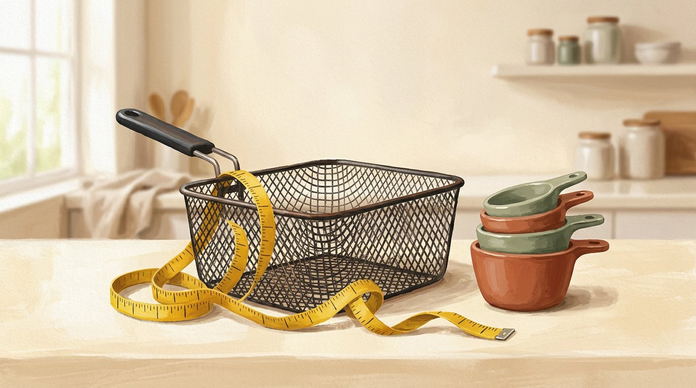

CAPACITY · BUYER'S NOTEBOOK
A no-hype checklist for comparing
air-fryer capacity.

The quart number on the box measures volume, not dinner. This checklist turns headline capacity into the only two numbers that matter: what fits inside, and what fits on your counter.
Step 1 · Write your portion math, not the box's
For one week, note what you actually cook: how many chicken thighs, how many potato portions, how many servings of vegetables. That list is your capacity requirement — nothing else is. A "serves 6" claim assumes side-dish portions and a specific food; your kitchen has its own truth.
Step 2 · Distinguish volume from usable area
Quarts measure the geometric volume of the cavity. Usable cooking area is smaller: heating elements, airflow paths, max-fill lines and the shape of the basket all subtract. For flat foods (toast, burgers, fish fillets) the honest measure is area; for piled foods (fries, nuggets) the honest measure is volume you can shake. Compare like with like, and get both numbers from the manufacturer's own specification for the exact model.
Step 3 · Check the geometry, not just the number
- Wide and shallow suits flat foods and single layers; shake less, crisp more evenly.
- Deep and narrow suits piled foods but rewards shaking halfway.
- Two small baskets suit two dishes with different timings — and two things to wash.
- Door and drawer clearance eats counter depth: add the pull-out length to the footprint before you promise the spot.
Step 4 · Run the counter audit
Measure the shelf or counter where the appliance will live — height included, if it goes under cabinets. Photograph it with the tape measure in frame. When you compare models, put that photo next to the official dimensions. Never compare against a memory of your counter.
Fill in your own capacity card
| Field | Your number | Source |
|---|---|---|
| Your most common batch (portions) | your kitchen, one observed week | |
| Counter spot: width × depth × height | your tape measure | |
| Model's cavity dimensions | official listing or manual only | |
| Model's usable single-layer area | official manual only | |
| Dishwasher-safe parts (official care info) | official manual only |
We leave model numbers out of the table on purpose: fill each row from the official source for the exact variant, and date it. If a value can't be confirmed, leave it blank.
What this guide deliberately doesn't do
No rankings, no prices, no review scores, no "best overall" badge. Listings we link are marked sponsored and disclosed above; specifics come from the official listing pages, which are the source of truth. See what's verified and what isn't.
Official sources: Amazon Associates Operating Agreement, §5 (disclosure) · Amazon Associates Program Policies · FTC Endorsement Guides FAQ · plus the manufacturer's own listing and manual for any exact model.
← Back to the notebook